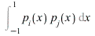
is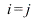
, in which case the integral isHere are three cases:
Integration 2
_________________________________________________________________________________
Exercise 1
| > | p[0] := sqrt(1/2);
p[1] := sqrt(3/2) * x; p[2] := sqrt(5/8) * (3*x^2 - 1); p[3] := sqrt(7/8) * (5*x^3 - 3*x); |
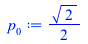 |
|
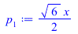 |
|
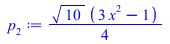 |
|
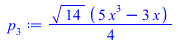 |
(1) |
We find experimentally that   unless
unless  .
.
Here are three cases:
| > | int(p[1] * p[2],x=-1..1); |
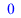 |
(2) |
| > | int(p[2] * p[2],x=-1..1); |
| (3) |
| > | int(p[3] * p[2],x=-1..1); |
| (4) |
We can do all 16 cases together and print the results in a table, as follows:
| > | Matrix(
[seq( [seq(int(p[i] * p[j],x=-1..1), j=0..3)], i=0..3)] ); |
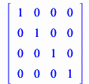 |
(5) |
We now need to find a function 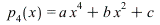
| > | p[4] := a*x^4 + b*x^2 + c ; |
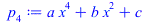 |
(6) |
The following integrals should be 0, 0, 0, 0 and 1, respectively:
| > | int(p[0] * p[4],x=-1..1);
int(p[1] * p[4],x=-1..1); int(p[2] * p[4],x=-1..1); int(p[3] * p[4],x=-1..1); int(p[4] * p[4],x=-1..1); |
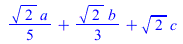 |
|
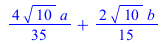 |
|
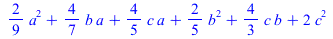 |
(7) |
We can get Maple to find  ,
,  and
and  based on this information:
based on this information:
| > | _EnvExplicit := true; |
| (8) |
| > | sol := solve({
int(p[0] * p[4],x=-1..1) = 0, int(p[1] * p[4],x=-1..1) = 0, int(p[2] * p[4],x=-1..1) = 0, int(p[3] * p[4],x=-1..1) = 0, int(p[4] * p[4],x=-1..1) = 1, a > 0 },{a,b,c}); |
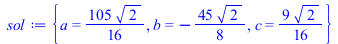 |
(9) |
| > | p[4] := factor(subs(sol,p[4])); |
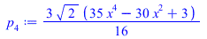 |
(10) |
| > | q := (n) -> sqrt(n + 1/2)*diff((x^2-1)^n,x$n)/(2^n * n!); |
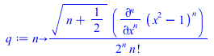 |
(11) |
| > | q(1); q(2); q(3); q(4); |
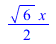 |
|
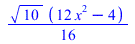 |
|
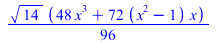 |
|
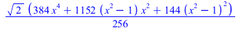 |
(12) |
| > | seq(factor(q(n)/p[n]),n=1..4); |
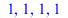 |
(13) |
_________________________________________________________________________________
Exercise 2
The general picture is that for any positive integers 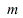 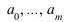 and
and
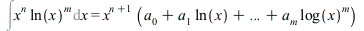
Here are some examples:
| > | factor(int(x^3*ln(x)^5,x)); |
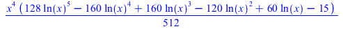 |
(14) |
| > | factor(int(x^4*ln(x),x)); |
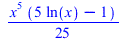 |
(15) |
| > | factor(int(x^4*ln(x)^3,x)); |
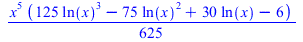 |
(16) |
_________________________________________________________________________________
Exercise 3
These first few integrals involve functions that you may not have seen before. The 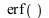 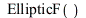 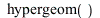
is essentially the cumulative probability function for the normal distribution, so is important in
statistics. The functions ,
various applications in more advanced mathematics. You can learn more about them by entering
?Ei, ?EllipticF or ?hypergeom in Maple.
(a)
| > | int(exp(-x^2),x); |
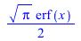 |
(17) |
(b)
| > | int(1/ln(x),x); |
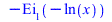 |
(18) |
(c)
| > | int(1/(sqrt(1-x^2)*sqrt(1-2*x^2)),x); |
| (19) |
(d)
| > | int((x^8+1)^(-1/2),x); |
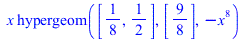 |
(20) |
(e)
| > | int(sin(x)*ln(ln(x)),x); |
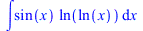 |
(21) |
(f)
| > | int(sin(sin(sin(x))),x); |
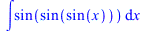 |
(22) |
(g)
| > | int(1/sqrt(1+x+x^10),x); |
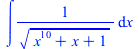 |
(23) |
We are looking for a function of  that can be defined in three characters, but cannot
that can be defined in three characters, but cannot
easily be integrated. At least one of the characters must be x (otherwise our function would
be constant, so we could integrate it). That does not leave much space for anything else:
we could have a letter or digit, or any of the characters +, -, *, / or ^. Most functions
built from these ingredients are easy to integrate:
| > | int(x+3,x); |
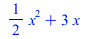 |
(24) |
| > | int(x*x,x); |
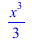 |
(25) |
| > | int(2^x,x); |
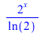 |
(26) |
There is just one exception:
| > | int(x^x,x); |
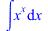 |
(27) |
There is actually an answer that is even shorter:
| > | int(x!,x); |
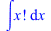 |
(28) |
This is a little bit dubious because 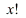 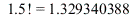 is an integer, and that would make
is an integer, and that would make
the integral meaningless. However, Maple does have a way to interpret  even when
even when  is not an
is not an
integer (eg
| > |
_________________________________________________________________________________
Exercise 4
| > | y := sin(x) + sin(3*x)/3 + sin(5*x)/5 + sin(7*x)/7; |
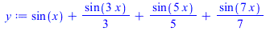 |
(29) |
| > | z := int(y,x); |
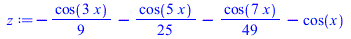 |
(30) |
The graph of 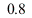 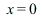 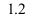 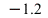 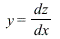 spends half the time wiggling near
spends half the time wiggling near  , jumping
, jumping
rapidly between these levels at  ,
,  and all other multiples of
and all other multiples of  . The graph of
. The graph of
 is a sawtooth, climbing from about
is a sawtooth, climbing from about  at
at  in a roughly straight line to about
in a roughly straight line to about  , then dropping in a roughly straight line to about
, then dropping in a roughly straight line to about  , and so on. This
, and so on. This
makes sense because  . When
. When  is near
is near  , the graph
, the graph
of slopes upwards at a roughly constant angle; when is near , the graph of  slopes down
slopes down
at a nearly constant angle.
| > | plot([y,z],x=-2*Pi..2*Pi); |
| > | unassign('y','z'); |
_________________________________________________________________________________
Exercise 5
| > | y := x*sin(20*x)*exp(-x); |
| (31) |
| > | z := 20*int(y,x); |
| (32) |
In this plot,  and
and  look very similar:
look very similar:
| > | plot([y,z],x=0..10); |
When we look more closely, we see that size of the oscillations in the two graphs are nearly the
same, as is the frequency of the oscillations, but the oscillations in  lag behind those in
lag behind those in  .
.
| > | plot([y,z],x=0..3); |
By focusing still further, we see that the extent of the lag is about a quarter of a complete cycle.
| > | plot([y,z],x=1.255..1.57); |
All this makes sense if we look at the formulae:
| > | y; |
| (33) |
| > | z; |
| (34) |
If we expand out  , the first term is , which is nearly .
, the first term is , which is nearly .
The remaining terms are much smaller. The function is the same as shifted by a
quarter cycle (because ). Thus, everything fits together.
In the first step mentioned above, you might want to enter expand(z) rather than doing it by hand.
This does not work very well, as Maple insists on converting into a polynomial in  ,
,
giving a very messy result. However, the following (rather obscure) syntax does the trick:
| > | evalf(frontend('expand',[z])); |
| (35) |
We now consider  :
:
| > | plot(y^2+z^2,x=0..6); |
| > | simplify(y^2+z^2); |
| (36) |
The first term is . As is close to ,
this is approximately  . The other terms are much smaller, so we guess that
. The other terms are much smaller, so we guess that
should be close to . We can check this graphically as follows:
| > | plot([y^2+z^2,x^2*exp(-2*x)],x=0..6); |
| > | unassign('y','z'); |
_________________________________________________________________________________
Exercise 6
Here is a solution in a single step:
| > | solve(
{seq(int(x^k*(a*x^2+b*x+c)*exp(-x),x=0..infinity)=k,k=1..3)}, {a,b,c} ); |
| (37) |
Here it is again, more slowly:
| > | y := (a*x^2+b*x+c)*exp(-x); |
| (38) |
| > | int1 := int(x*y,x=0..infinity); |
| (39) |
| > | int2 := int(x^2*y,x=0..infinity); |
| (40) |
| > | int3 := int(x^3*y,x=0..infinity); |
| (41) |
| > | solve({int1 = 1, int2 = 2, int3 = 3},{a,b,c}); |
| (42) |
| > | unassign('y'); |
_________________________________________________________________________________
Exercise 7
| > | fsolve(x*(ln(ln(x)) + ln(x) - 1) = 541,{x=100}); |
| (43) |
_________________________________________________________________________________
Exercise 8
| > | seq(a+b^n,n=2..10); |
| (44) |
| > |
_________________________________________________________________________________
Exercise 9
| > | with(plots): |
| > | display(
implicitplot(x^4+y^4=1,x=-2..2,y=-2..2), plot([cos(t)/(2+cos(4*t)),sin(t)/(2+cos(4*t)),t=0..2*Pi]) ); |
| > |
| > |
_________________________________________________________________________________
Exercise 10
| > | evalf[100](Pi^76/exp(87)); |
| (45) |
| > |
_________________________________________________________________________________
Exercise 11
| > | simplify(sin(2*x) * tan(2*x) * diff(log(tan(x)),x,x)); |
| (46) |
| > |
| > |